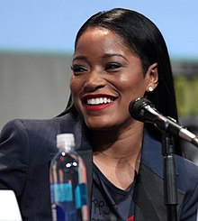
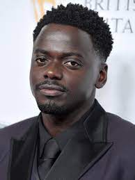

Trailer
Elenco
-

Keke Palmer
Lauren Keyana "Keke" Palmer, é uma atriz, cantora, compositora e dubladora estadunidense. Ela é mundialmente conhecida pelo papel de True Jackson na série True Jackson.
-

Daniel Kaluuya
Daniel Kaluuya é um ator e roteirista britânico, mais conhecido por interpretar Chris Washington no filme Corra!
-
Brandon Perea
Brandon Perea é um ator norte-americano, conhecido pela participação na série The OA.
-
Steven Yeun
È um ator sul-coreano, naturalizado norte-americano, mais conhecido por ter feito o papel de Glenn Rhee na série The Walking Dead e o papel de Jacob Yi no filme Minari: Em Busca de Felicidade, pelo qual foi indicado ao Oscar de Melhor Ator Principal
-
Keith David
Keith David Williams, mais conhecido por Keith David, é um ator e dublador norte-americano.
-
Michael Wincott
Michael Anthony Claudio Wincott é um ator canadense. Sua voz profunda e rouca muitas vezes o levou a ser escalado para papéis de vilão.
-
Barbie Ferreira
Barbara Linhares Ferreira, é uma atriz e modelo brasilo-estadunidense. Ela é mais conhecida por interpretar Kat Hernandez na série de televisão Euphoria da HBO.
-
Donna Mills
Donna Mills é uma atriz americana. Ela começou sua carreira na televisão em 1966 com um papel recorrente em The Secret Storm, e no mesmo ano apareceu na Broadway na comédia de Woody Allen, Don't Drink the Water. Ela fez sua estréia no cinema no ano seguinte em O Incidente.

Direção
Jordan Peele
Jordan Peele é um ator e cineasta norte-americano, mais conhecido por ter feito parte do elenco do MADtv e por ter escrito e dirigido Get Out, cujo roteiro lhe rendeu um Oscar de melhor roteiro original em 2018, tornando-o o primeiro negro a receber o prêmio na categoria.
Avaliação
Nope !
2022, Sci-fi/Horror, 2h 15m